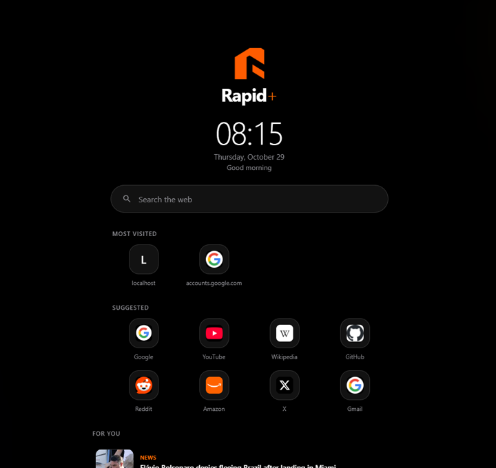

Rapid+ Browser for Windows
Every release, with what changed in each one. Free, no account needed, 64-bit Windows 10/11.



Release history
Click a version to read what changed and download it.
1.2.0 Latest29 Oct 2026
Rapid+ is now free for everyone — no account or sign-in needed, everything runs locally. New: ad & tracker blocker, a For You content feed on the start page, a daily digest notification (off by default), per-profile PIN lock, scheduled auto-clear of browsing data, downloading videos/audio found on a page (off by default), a connection-security indicator with Proceed Anyway for untrusted certificates, removable Most Visited tiles, reopen closed tab (Ctrl+Shift+T), and a refreshed install experience with the current Rapid+ branding.
1.1.116 Oct 2026
Fixes sync not working: the Firestore rules needed for cross-device bookmark sync were now live, and signing in to sync was folded into the same "Sign in to Google" flow instead of being a separate, confusing second sign-in. (Account sync has since been removed entirely in 1.2.0 — the app is fully local now.)
1.1.016 Oct 2026
Test a proxy before you save it, read articles distraction-free with Reader mode, and sync your bookmarks across devices by signing in to your Rapid+ account.
1.0.61 Oct 2026
Adds a custom user-agent option: pick "Custom..." in the user-agent switcher (toolbar popover or Settings) and enter any user-agent string you need.
1.0.530 Sep 2026
Fixes three bugs found right after 1.0.4 shipped: VPN mode silently falling back to a direct connection every time the app was restarted (your saved proxy now applies correctly from launch); pinned tabs unpinning themselves on restart (pinned state is now saved and restored); and the address bar not offering Cut/Copy/Paste on right-click.
1.0.430 Sep 2026
New: a proper Downloads button in the toolbar; a redesigned tab strip and toolbar with clearer colors; the 3-dot menu, profiles and VPN buttons now close properly on a second click; Save page as... (Ctrl+S) and Copy link added to the menu; and a full proxy manager — save multiple proxies, edit or remove them, and switch which one is active from a single popup.
1.0.129 Sep 2026
New: address-bar suggestions now show site icons and popular sites; a tab-preview switcher shows a live thumbnail of each open tab; right-click to save images or videos; a right-click menu on tabs (pin, duplicate, mute, close variants); a VPN/user-agent toolbar indicator with quick controls; and downloads now support real pause, resume and cancel with live speed and time remaining.
1.0.021 Sep 2026
First release. Sign in to Google like in Chrome (Gmail, YouTube and other Google sites stay signed in per profile), website login prompts, clear browsing data by time period, and fixes for tab closing and fullscreen video.